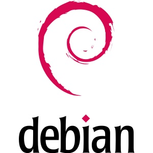

Debian es un sistema operativo libre y de código abierto, conocido por su estabilidad, seguridad y robustez. Fundado por Ian Murdock en 1993, Debian ha evolucionado para convertirse en una de las distribuciones de Linux más respetadas y utilizadas en el mundo. Su nombre proviene de la combinación de los nombres de Murdock y su esposa, Debra. Uno de los pilares fundamentales de Debian es su compromiso con la filosofía del software libre. Todos los paquetes incluidos en Debian cumplen con las Directrices de Software Libre de Debian (DFSG), lo que garantiza que los usuarios tienen la libertad de usar, modificar y distribuir el software. Este enfoque ha cultivado una comunidad activa y colaborativa que participa en el desarrollo, mantenimiento y mejora del sistema operativo. Debian se distingue por su estructura organizativa única y democrática. La gestión del proyecto se lleva a cabo por desarrolladores voluntarios de todo el mundo, quienes toman decisiones clave a través de un sistema de votación. Este modelo de gobernanza asegura que el proyecto se mantenga fiel a sus principios y que las decisiones sean tomadas en beneficio de la comunidad en general.
